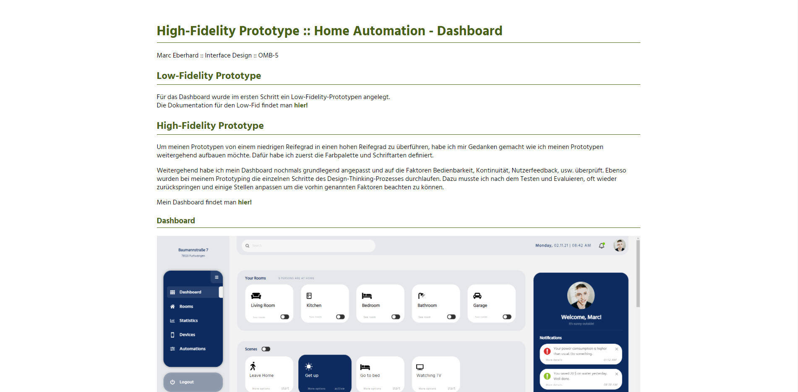

Overview :: Home Automation - Dashboard
Marc Eberhard :: Interface Design :: OMB-5
1.0. Konzeptentwurf
Erster Konzeptentwurf des Dashboards.
1.1. Moodboard
Ein Moodboard mit ersten Eindrücken zum Dashboard.

2.0. Low-Fidelity Prototyp
Erste Skizzen und Ansätze des Dashboards.
2.1. Toolanalyse - axure
Eine Analyse des Prototyping-Tools axure.
3.0. High-Fidelity Prototyp
Ein ausgereifter Prototyp des Dashboards.
4.0. Test and Evaluate
Ein Testing des Prototyps mit 4 Probanden.
5.0. Enhancement
Verbesserung des Dashboard mit den Erkenntnissen aus dem User-Testing.
Zum fertigen Dashboard:
Hier klicken!